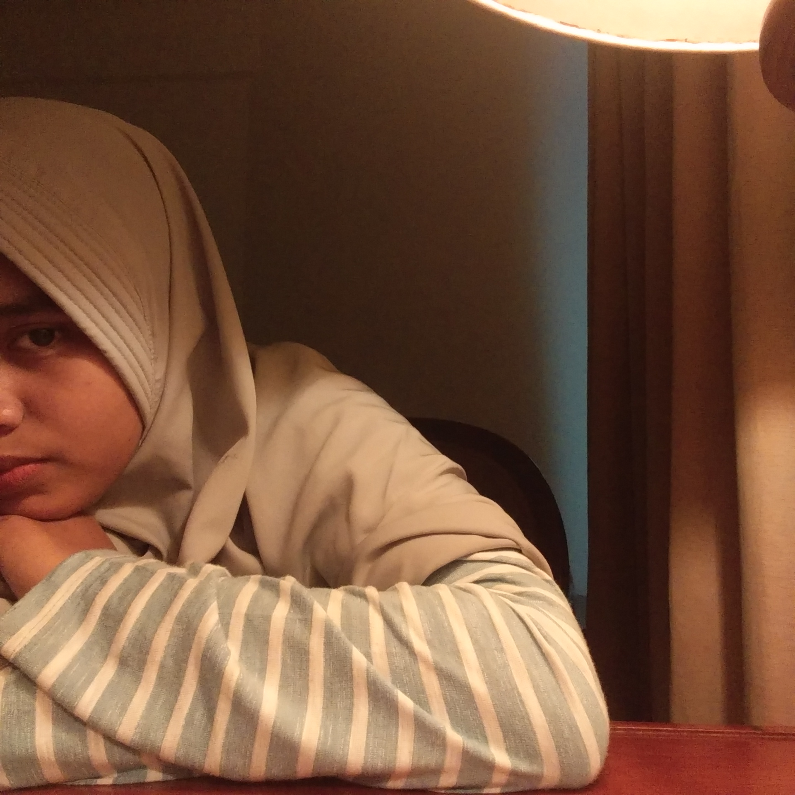

Nama : Nurul Rossa W Tosofu
NIM : 1800018142
Kelas : C
Angkatan : 2018
10 PUISI TERBAIK TENTANG SAHABAT
Rindu Sahabat
Di kala malam datang
Di saat itulah aku selalu merindukanmu
Kamu yang dulu selalu bersamaku
Kini kau telah jauh di negeri orang
Kita terpisahkan oleh jarak yang begitu jauh.
Andai kau tau
Aku di sini selalu merindumu
Aku rindu pada sosok dirimu yang begitu ceria
Entah gimana keadaanmu sekarang.
Hanya potret gambarmu yang bisa menepis rindu ini
Kau adalah sahabat terbaikku
Jangan lupakan aku
Walau raga kita jauh, tetapi kita tetap satu tujuan.
(By: Verrenika Asmarantaka)
Teruntuk Sahabat
Layaknya lilin di tengah gulita
menyiramkan cahaya dalam kegelapan
Seperti mentari di pagi buta
menghantarkan sinar kehangatan, mengusir kebekuan
Bagaikan bintang yang mewarnai malam
yang tak membiarkan rembulan mengangkasa tanpa teman
membawa keceriaan dan kesetiaan
Bersamamu
Melalui hari-hari yang penuh liku
Bergenggaman erat menepis gundah dan nestapa
Berbagi kisah
Tentang cita-cita namun bukanlah angan belaka
Tentang cinta yang membuncah namun tertahan di dalam jiwa
Tentang harapan yang hendak digapai di masa datang
Tentang kegagalan yang hampir meremukkan keyakinan
Sahabat
Kita bersama dalam suka maupun duka
Saling mengingatkan di tengah canda
Aku berharap dan berdoa
Kita kan terus melangkah bersama
Menggapai ridho dan cinta-Nya
Meski jarak membentang di antara kita
Tak kubiarkan meluluhkan benang kasih yang telah tercipta
Sahabat
Terima kasih untuk segalanya
Dan biarkanlah kisah kita terus terangkai
Kini, esok, hingga masa depan
Aku bangga dapati Dirimu seadanya
Kupikir, pantaslah dirimu kutemani
Aku bahagia, Sungguh ingin terurai Kata
Kaulah sahabatku
Bila hari-harimu tertimpa Bahaya,
Kudoakan Kasih Bagimu
Bila hari-harimu dilanda duka,
Kudoakan Harapan Bagimu
Bila HAri-harimu Barlarut ceria,
Kudoakan Damai bagimu
Selama matahari masih terbit dan terbenam,
Selama panas dan hujan masih silih Berganti,
Selama bulan dan bintang dilangit masih bercahaya,
Akulah sahabatmu
Biarpun kita tak mungkin bersama
Sendiri kan kurangkai karsa
Sendiri kan kususun cerita
Berjalan terus menggapai cita
Dalam satu asa dan doa
Bahagia menyertaimu selamanya.
(Oleh: Distryadeanis)
Bintang untuk Sahabat
Malam nan suci dan sepi,
Menarikku untuk keluar dari rumah.
Kupandangi Langit malam.
Ternyata bertaburkan Bintang yang tak terhitung jumlahnya.
Andaikan ku seorang bidadari,
Kan kubawa diriku dan sahabatku untuk menari di atas sana.
Kuraih sebuah bintang terindah,
dan kupersembahkan untuk sahabatku yang selalu menemaniku.
(By: Siti Halimah)